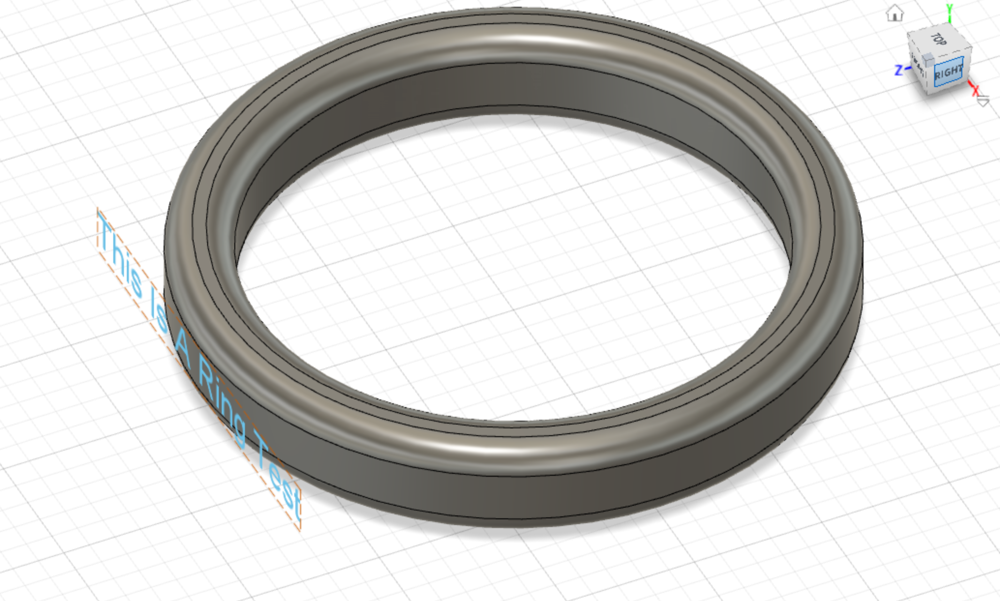
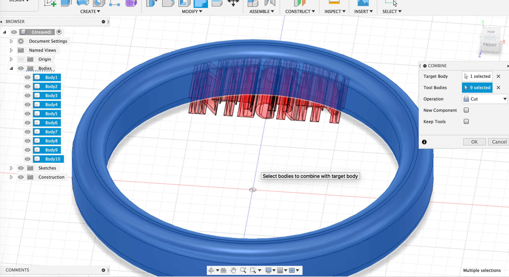
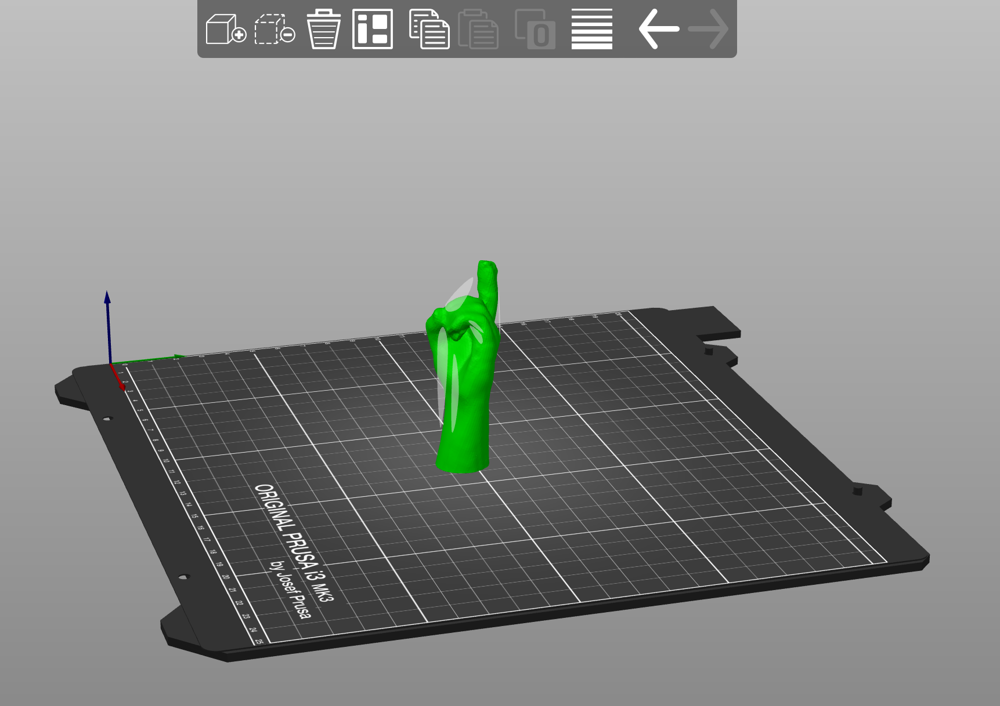

Week 5: 3D Design and Printing
I've struggled to find rings that fit me, so I decided to fabricate a few rings with inlayed text printed for my hands.

After measuring my hand and creating the basic smooth shape of the ring, my challenge was to inlay the text at an even depth across the curved surface. I created a tangent plane to put the flat text on, then extruded it to the surface of the ring.

Prints for the rings were rapid even with a 20% infill. Each took roughly 12 minutes on the Prusa. My second ring is a copy of an old ring of my fathers. Instead of scanning it, I measured and did my best to match the font and text placement.
 By reducing the depth of engraving, I was able to make the printed text slightly sharper. However, the letters still appear slightly distorted.

3D printing the rings alowed me to carefully fillet the edges, which would have been challenging using the laser cutter. I can imagine, however, that a CNC machine could do a better job accurately creating the text subtractively, since the warm material has a tendency to sag into the empty space.
In order to create a small stand for the rings, I used the Sense scanner to create a scan of my hand. After exporting as a obj file and importing into the Prusa slicer, I was able to scale it down. It is printing now!
